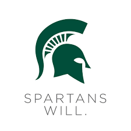

About the Author
Hello! My name is Ali Al Ali. I am a passionate Computer Science student at Michigan State University, deeply interested in technology, innovation, and helping others learn. With a GPA of 3.94, I strive for excellence both academically and professionally. I have strong technical skills in programming languages such as Python, C++, Java, and web technologies like HTML and CSS.
Outside of my academic pursuits, I have practical experience developing automation tools, including a Telegram bot that manages thousands of groups efficiently. I also have a background in tutoring and mentoring students, particularly in mathematics and computer science, helping many achieve their academic goals. My dedication to learning and teaching is matched by a commitment to community engagement through volunteer activities.
Skills & Interests
- Programming Languages: Python, C++, Java, HTML, CSS, JavaScript
- Software: Microsoft Office (Excel, Word, PowerPoint)
- Volunteer Leadership in Educational Communities
- Passion for Rubik's Cubes and Mathematical Puzzles
I believe in continuous growth and giving back to the community. Through this blog, I aim to share insights about the latest projects in Saudi Arabia and provide valuable information to my readers. Thank you for visiting!